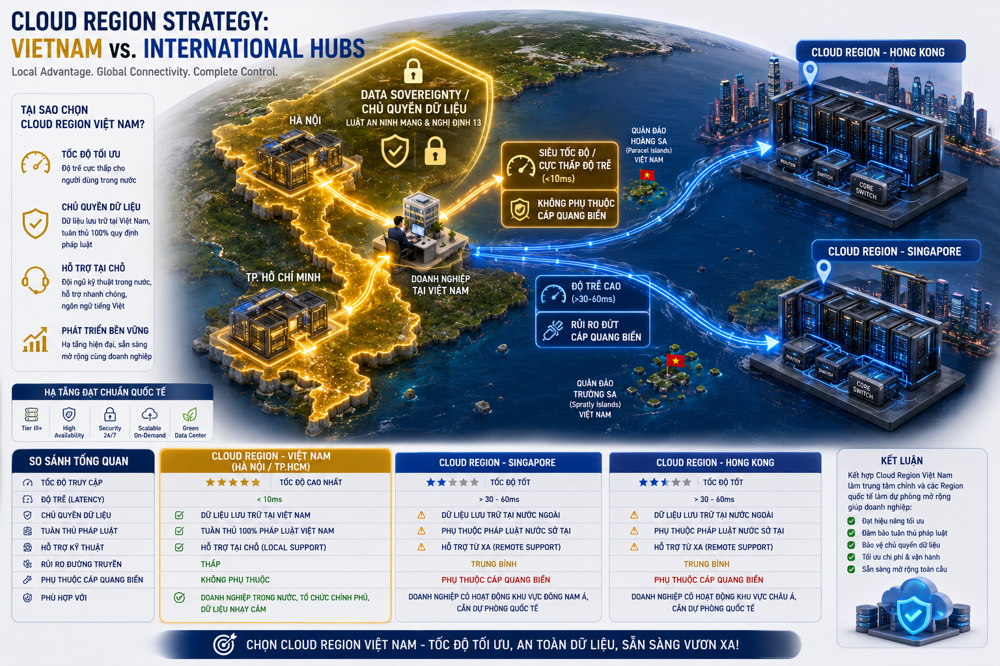
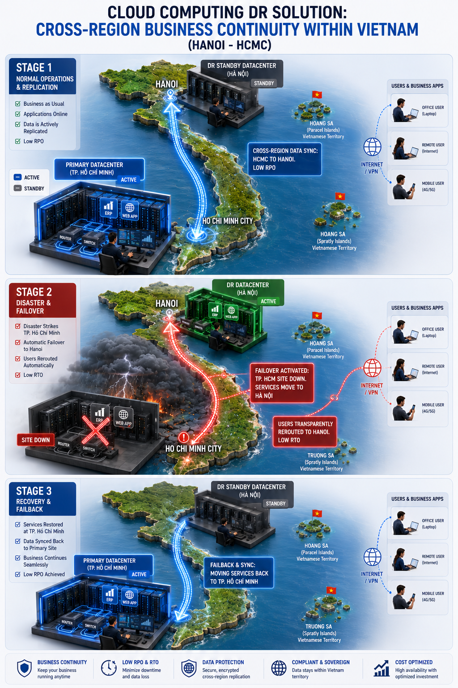
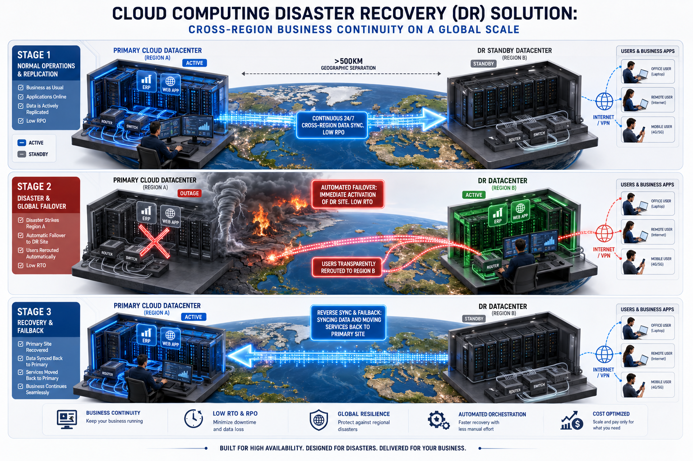
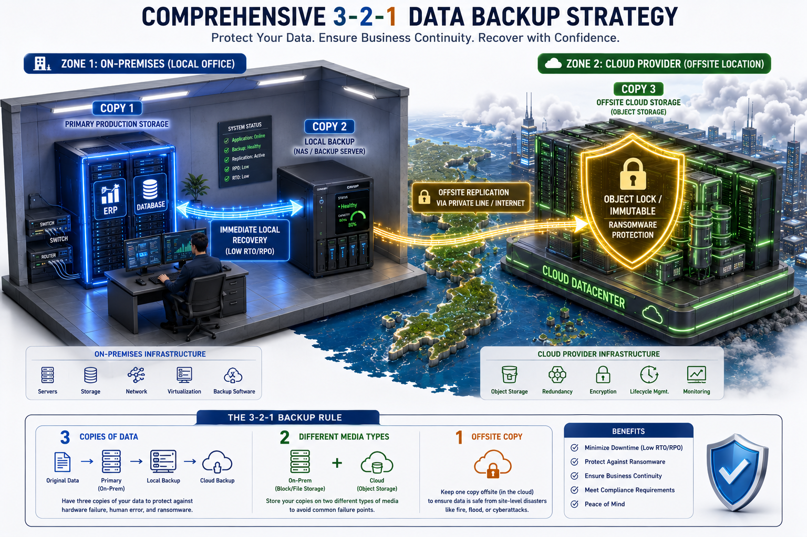
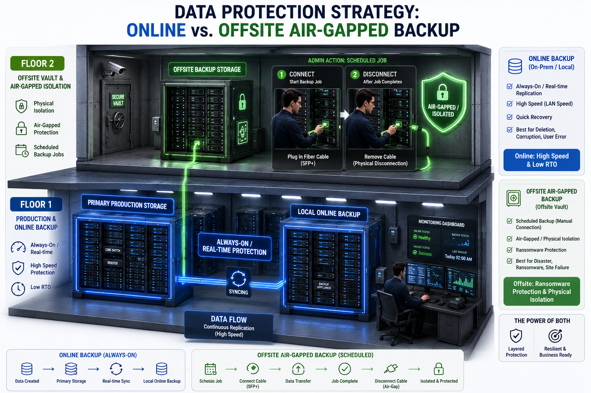
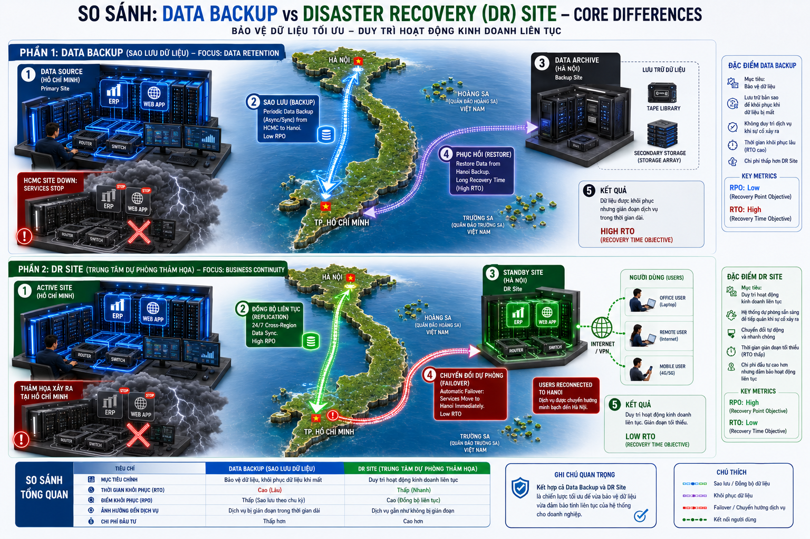

Mục tiêu module này: Giúp Sales phân biệt đúng các khái niệm dễ bị nói lẫn trong tư vấn Cloud Computing. Module tập trung vào Cloud region, DR site, DR đa quốc gia, backup strategy, online/offsite backup, và sự khác nhau giữa DR site với data backup.
Khách hàng thường dùng chung các từ "Cloud", "DR", "backup", "site dự phòng", "lưu dữ liệu nhiều nơi" như thể chúng giống nhau. Nhưng trong tư vấn hạ tầng, mỗi thuật ngữ giải quyết một bài toán khác nhau: nơi chạy workload, nơi dự phòng khi có sự cố, cách lưu bản sao dữ liệu, và khả năng khôi phục dịch vụ.
Khi cần thêm thuật ngữ mới, giữ cùng cấu trúc sau để Sales dễ học và dễ dùng lại trong tư vấn:
- Tên thuật ngữ: dùng tên phổ biến mà khách hàng hoặc Presales hay nhắc tới.
- Ảnh sử dụng: ghi tên file ảnh minh họa nếu có.
- Khái niệm: giải thích ngắn, đúng bản chất, tránh quá kỹ thuật.
- Sales cần hiểu: nêu điểm dễ nhầm hoặc rủi ro khi tư vấn sai.
- Khi nào khách hàng quan tâm: liệt kê tình huống kinh doanh hoặc vận hành thường gặp.
- Câu nói đúng: một câu talk-track Sales có thể dùng khi gặp khách hàng.

- Muốn giảm độ trễ cho người dùng ở nhiều quốc gia.
- Có yêu cầu dữ liệu lưu trong một quốc gia/khu vực cụ thể.
- Muốn triển khai hệ thống gần khách hàng cuối.
- Cần thiết kế multi-region để tăng khả năng sẵn sàng.
"Cloud provider có thể có nhiều region tại nhiều quốc gia, nhưng việc hệ thống của khách hàng có chạy hoặc dự phòng ở nhiều quốc gia hay không phụ thuộc vào thiết kế kiến trúc, replication, network và chính sách dữ liệu — không phải tự nhiên mà có."

- Có hệ thống quan trọng cần đảm bảo uptime.
- Không muốn dữ liệu ra khỏi quốc gia.
- Cần tuân thủ quy định nội địa.
- Muốn có phương án khôi phục dịch vụ trong trường hợp site chính lỗi.
"DR site trong cùng quốc gia giúp khách hàng có điểm khôi phục dịch vụ khi site chính gặp sự cố, nhưng vẫn giữ dữ liệu và vận hành trong phạm vi quốc gia — phù hợp với các yêu cầu tuân thủ nội địa."

- Doanh nghiệp hoạt động đa quốc gia.
- Cần khả năng phục hồi khi một quốc gia/khu vực gặp sự cố lớn.
- Có người dùng hoặc chi nhánh ở nhiều nước.
- Cần chiến lược business continuity ở cấp khu vực.
"DR site ở nhiều quốc gia giúp tăng khả năng phục hồi ở cấp khu vực, nhưng cần đánh giá kỹ yêu cầu pháp lý, vị trí dữ liệu, độ trễ, chi phí kết nối và quy trình failover trước khi thiết kế."

-
33 bản dữ liệu: dữ liệu chính + ít nhất 2 bản sao.
-
22 loại môi trường lưu trữ: ví dụ storage nội bộ và object storage/cloud backup.
-
11 bản offsite: nằm ngoài site chính để tránh mất dữ liệu khi site chính gặp sự cố.
"Backup 3-2-1 giúp giảm rủi ro mất dữ liệu bằng cách giữ nhiều bản sao ở nhiều môi trường khác nhau, trong đó có ít nhất một bản tách khỏi site chính — đây là nguyên tắc tối thiểu bất kỳ hệ thống quan trọng nào cũng nên có."

- Muốn bảo vệ dữ liệu khỏi lỗi người dùng, ransomware, lỗi hệ thống.
- Cần bản sao ngoài site chính.
- Cần khôi phục file, database, VM hoặc hệ thống sau sự cố.
- Muốn có chính sách retention theo ngày, tuần, tháng.
"Online/offsite backup giúp khách hàng có bản sao dữ liệu ở ngoài site chính, nhưng cần thiết kế đúng retention, encryption, restore test và băng thông để đảm bảo khôi phục được khi cần — backup mà không test restore thì không đáng tin cậy."

| Tiêu chí | Data Backup | DR Site |
|---|---|---|
| Mục tiêu chính | Khôi phục dữ liệu | Khôi phục dịch vụ/workload |
| Câu hỏi cần trả lời | Có lấy lại được dữ liệu không? | Hệ thống có chạy lại được ở đâu và trong bao lâu? |
| Thành phần chính | Bản sao dữ liệu, retention, encryption, restore | Hạ tầng dự phòng, dữ liệu đồng bộ, network, failover plan |
| Chỉ số quan trọng | Backup frequency, retention, restore time | RTO, RPO, failover time, DR test |
| Chi phí | Thường thấp hơn DR site | Thường cao hơn vì cần môi trường chạy dự phòng |
| Rủi ro nếu hiểu nhầm | Có backup nhưng khôi phục chậm hoặc thiếu dữ liệu | Có site dự phòng nhưng dữ liệu không đồng bộ hoặc failover không chạy |
Backup trả lời câu hỏi "dữ liệu có còn không?". DR site trả lời câu hỏi "dịch vụ có chạy lại được không?". Một hệ thống quan trọng thường cần cả backup và DR, nhưng hai khái niệm này không thay thế hoàn toàn cho nhau.
"Nếu hệ thống gặp sự cố, câu hỏi đầu tiên cần hỏi là: khách hàng muốn khôi phục dữ liệu, hay muốn dịch vụ chạy lại nhanh? Hai mục tiêu đó cần hai giải pháp khác nhau — backup và DR site thường cần song song nhau, không thay thế nhau."
RTO là khách hàng chịu downtime tối đa bao lâu. RPO là khách hàng chịu mất dữ liệu tối đa bao lâu. RTO càng ngắn và RPO càng nhỏ thì giải pháp DR/backup càng cần thiết kế kỹ hơn và chi phí thường cao hơn.
🎯 Kết luận Module 12
Ba lớp kiến thức cần nắm vững trước khi tư vấn giải pháp DR hoặc Backup cho khách hàng